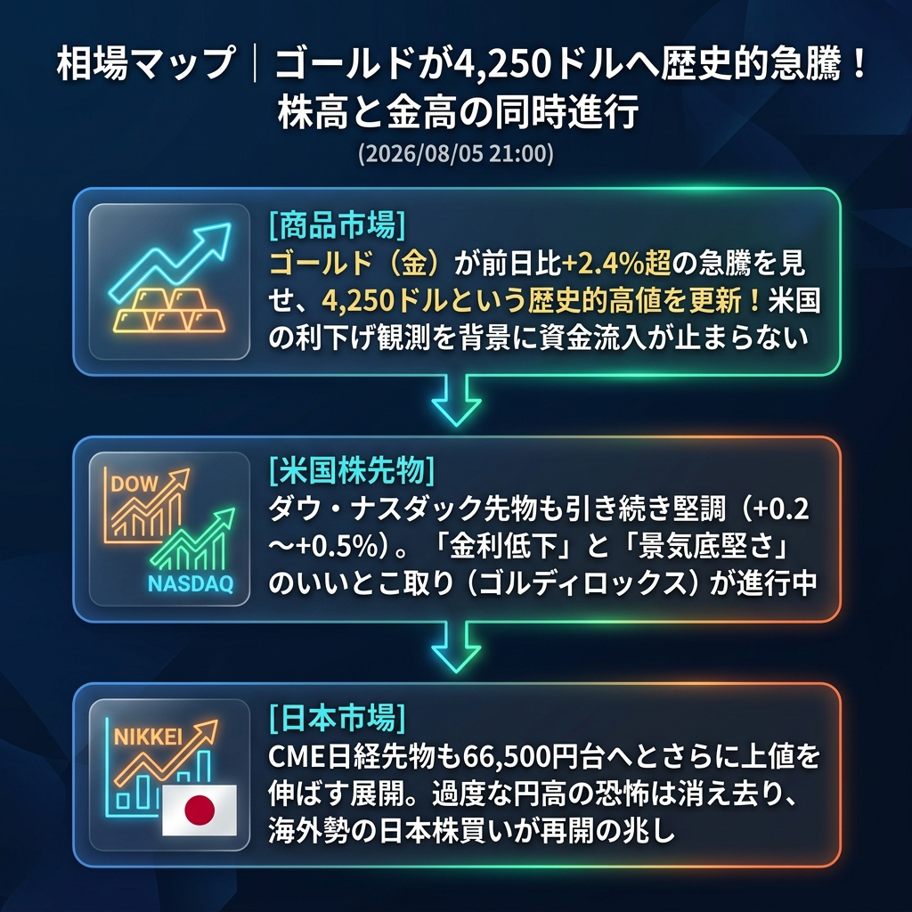

市場では「株高」と「金（ゴールド）高」が同時進行する、強烈なリスクオン相場が展開されています！
特に注目すべきはゴールド（金）の歴史的な急騰です。前日比+2.4%を超える上昇を見せ、一気に4,250ドルの大台を突破しました。米国の利下げ観測（金利低下）が強まる中、株式市場は「景気が底堅い中での利下げ（ゴルディロックス）」を好感して上昇し、同時に金利がつかない金にも資金が怒涛のごとく流れ込んでいます。
「ゴールドの4,250ドル超え歴史的急騰」と「ゴルディロックス相場の進行」。
欧州時間が本格化してもリスクオンの流れは止まらず、欧州株（DAXやFTSE）は総じてプラス圏で推移しています。米国株先物（ダウ・ナスダック）も堅調な推移を続けており、CME日経先物は66,500円台へとさらに上値を切り上げています。先週までの「円高・株安」のパニックは完全に払拭され、海外勢による日本株の買い越しが再び始まっている兆しがあります。
| 指数・銘柄 | 現在値 | 前回比（前日比） | 騰落率 | 確認事項 |
|---|---|---|---|---|
| S&P 500 (ES=F) | 7,807.25 | +41.75 | +0.54% | 堅調推移 |
| Nasdaq (NQ=F) | 29,938.5 | +75.00 | +0.25% | 高値揉み合い |
| Dow (YM=F) | 54,494.0 | +226.0 | +0.42% | 底堅い |
| 日経225現物 | 66,300.44 | 0.00 | 0.00% | 15:00大引け値 |
| CME日経225先物 | 66,510.0 | +1025.0 | +1.57% | 夜間でも上値追い継続 |
| USD/JPY | 157.586 | -0.194 | -0.12% | 157円台後半で安定 |
| EUR/USD | 1.1550 | +0.0016 | +0.14% | じり高 |
| 金 | 4,253.9 | +101.3 | +2.44% | 【歴史的急騰】4250ドル突破！ |
| 原油 | 76.04 | +0.27 | +0.36% | 小幅反発 |
| BTCUSD | 64,122.96 | +70.40 | +0.11% | 高値で安定 |